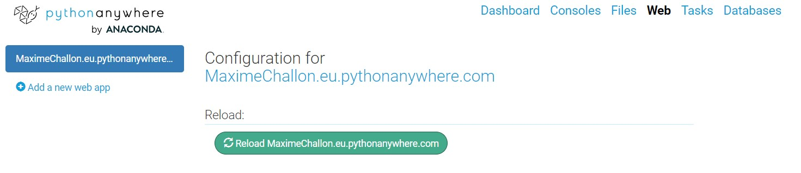

Notes préalables:
Se rendre à l'URL https://eu.pythonanywhere.com/registration/register/beginner/ et créer un compte. Vous devriez arriver sur cette page :
Se rendre dans "Web" afin de créer une nouvelle application
Comme c'est un compte gratuit, il n'y a pas le choix du nom de domaine: user.eu.pythonanywhere.com. Sélectionner Flask, puis Python 3.10. Le chemin proposé pour l'installation de Flask importe peu, nous allons écraser ce dossier par la quite pour y cloner le dépôt à la place.
L'application de base proposée par PythonAnyWhere est fonctionnelle:
Faisons un tour de son fonctionnement et des différents fichiers qui permettent de la faire tourner. Dans l'onglet "Web" et à la section code, on trouve:

/var/www/user_eu_pythonanywhere_com_wsgi.py et on y trouve notamment le code suivant, où project_home est le Source code indiqué ci-dessus:import sys
# add your project directory to the sys.path
project_home = '/home/user/factbook'
if project_home not in sys.path:
sys.path = [project_home] + sys.path
# import flask app but need to call it "application" for WSGI to work
from flask_app import app as application # noqa
Ce qui importe dans ce code est l'import final.
Les autres sections de l'onglet "Web" renvoient toutes à des notions vues en cours.

Aller dans l'onglet "Consoles". Ouvrir une console "Bash".
Exécuter les commandes suivantes pour se situer:
13:48 ~ $ pwd
/home/user
13:48 ~ $ dir
README.txt factbook
13:48 ~ $
On peut ensuite cloner le dépôt https://github.com/MaximeChallon/CoursM2TNAH_Flask_app_finale.git, à côté du factbook. On reste donc dans le dossier courant.
13:48 ~ $ git clone https://github.com/MaximeChallon/CoursM2TNAH_Flask_app_finale.git
Cloning into 'CoursM2TNAH_Flask_app_finale'...
remote: Enumerating objects: 62, done.
remote: Counting objects: 100% (62/62), done.
remote: Compressing objects: 100% (42/42), done.
remote: Total 62 (delta 15), reused 62 (delta 15), pack-reused 0
Unpacking objects: 100% (62/62), 31.95 KiB | 25.00 KiB/s, done.
13:49 ~ $ dir
CoursM2TNAH_Flask_app_finale README.txt factbook
13:49 ~ $
On peut quitter la console.
13:49 ~ $ exit
exit
Console closed.
Rouvrir une console Bash, et exécuter :
13:55 ~ $ mkvirtualenv env --python=/usr/bin/python3.10
created virtual environment CPython3.10.5.final.0-64 in 9829ms
creator CPython3Posix(dest=/home/user/.virtualenvs/env, clear=False, no_vcs_ignore=False, global=False)
seeder FromAppData(download=False, pip=bundle, setuptools=bundle, wheel=bundle, via=copy, app_data_dir=/home/MaximeChallon/.local/share/virtualenv)
added seed packages: pip==22.1.2, setuptools==62.6.0, wheel==0.37.1
activators BashActivator,CShellActivator,FishActivator,NushellActivator,PowerShellActivator,PythonActivator
virtualenvwrapper.user_scripts creating /home/user/.virtualenvs/env/bin/predeactivate
virtualenvwrapper.user_scripts creating /home/user/.virtualenvs/env/bin/postdeactivate
virtualenvwrapper.user_scripts creating /home/user/.virtualenvs/env/bin/preactivate
virtualenvwrapper.user_scripts creating /home/user/.virtualenvs/env/bin/postactivate
virtualenvwrapper.user_scripts creating /home/user/.virtualenvs/env/bin/get_env_details
Comme indiqué dans les logs, l'environnement virtuel env a été créé dans le dossier /home/user/.virtualenvs/ (où user est votre nom d'utilisateur). AUtrement dit, dans le working directory, on trouve désormais les deux répertoires qui nous intéressent:
.virtualenvs/env/CoursM2TNAH_Flask_app_finalePar défaut, l'environnement virtuel a peut être été activé dans notre console (repérable par un (env) dans le terminal). Si ce n'est pas le cas, effectuer workon env.
Important: comme dans une exécution en local sur son PC, il faut désormais toujours activer l'environnement virtuel dans les consoles pour effectuer des opérations.
Se rendre dans le répertoire de l'application
(env) 13:59 ~ $ cd CoursM2TNAH_Flask_app_finale/
(env) 14:00 ~/CoursM2TNAH_Flask_app_finale (master)$ dir
app requirements.txt run.py
Le fichier requirements.txt contient les dépendances de l'application et leur version; on va l'utiliser avec pip pour tout installer rapidement.
(env) 14:00 ~/CoursM2TNAH_Flask_app_finale (master)$ pip install -r requirements.txt
Looking in links: /usr/share/pip-wheels
Collecting click==8.1.3
Downloading click-8.1.3-py3-none-any.whl (96 kB)
━━━━━━━━━━━━━━━━━━━━━━━━━━━━━━━━━━━━━━━━ 96.6/96.6 kB 3.2 MB/s eta 0:00:00
Collecting colorama==0.4.6
Downloading colorama-0.4.6-py2.py3-none-any.whl (25 kB)
Collecting Flask==2.2.2
Downloading Flask-2.2.2-py3-none-any.whl (101 kB)
━━━━━━━━━━━━━━━━━━━━━━━━━━━━━━━━━━━━━━━━ 101.5/101.5 kB 3.2 MB/s eta 0:00:00
Collecting Flask-Login==0.6.2
Downloading Flask_Login-0.6.2-py3-none-any.whl (17 kB)
Collecting Flask-SQLAlchemy==3.0.2
Downloading Flask_SQLAlchemy-3.0.2-py3-none-any.whl (24 kB)
Collecting Flask-WTF==1.0.1
Downloading Flask_WTF-1.0.1-py3-none-any.whl (12 kB)
Collecting greenlet==2.0.1
Downloading greenlet-2.0.1-cp310-cp310-manylinux_2_17_x86_64.manylinux2014_x86_64.whl (539 kB)
━━━━━━━━━━━━━━━━━━━━━━━━━━━━━━━━━━━━━━━━ 539.9/539.9 kB 14.5 MB/s eta 0:00:00
Collecting itsdangerous==2.1.2
Downloading itsdangerous-2.1.2-py3-none-any.whl (15 kB)
Collecting Jinja2==3.1.2
Downloading Jinja2-3.1.2-py3-none-any.whl (133 kB)
━━━━━━━━━━━━━━━━━━━━━━━━━━━━━━━━━━━━━━━━ 133.1/133.1 kB 4.4 MB/s eta 0:00:00
Collecting MarkupSafe==2.1.1
Downloading MarkupSafe-2.1.1-cp310-cp310-manylinux_2_17_x86_64.manylinux2014_x86_64.whl (25 kB)
Collecting python-dotenv==0.21.0
Downloading python_dotenv-0.21.0-py3-none-any.whl (18 kB)
Collecting SQLAlchemy==1.4.44
Downloading SQLAlchemy-1.4.44-cp310-cp310-manylinux_2_5_x86_64.manylinux1_x86_64.manylinux_2_17_x86_64.manylinux2014_x86_64.whl (1.6 MB)
━━━━━━━━━━━━━━━━━━━━━━━━━━━━━━━━━━━━━━━━ 1.6/1.6 MB 29.6 MB/s eta 0:00:00
Collecting Werkzeug==2.2.2
Downloading Werkzeug-2.2.2-py3-none-any.whl (232 kB)
━━━━━━━━━━━━━━━━━━━━━━━━━━━━━━━━━━━━━━━━ 232.7/232.7 kB 7.4 MB/s eta 0:00:00
Collecting WTForms==3.0.1
Downloading WTForms-3.0.1-py3-none-any.whl (136 kB)
━━━━━━━━━━━━━━━━━━━━━━━━━━━━━━━━━━━━━━━━ 136.5/136.5 kB 4.7 MB/s eta 0:00:00
Installing collected packages: python-dotenv, MarkupSafe, itsdangerous, greenlet, colorama, click, WTForms, Werkzeug, SQLAlchemy, Jinja2, Flask, Flask-WTF, Flask-SQLAlchemy, Flask-Login
Successfully installed Flask-2.2.2 Flask-Login-0.6.2 Flask-SQLAlchemy-3.0.2 Flask-WTF-1.0.1 Jinja2-3.1.2 MarkupSafe-2.1.1 SQLAlchemy-1.4.44 WTForms-3.0.1 Werkzeug-2.2.2 click-8.1.3 colorama-0.4.6 greenlet-2.0.1 itsdangerous-2.1.2 python-dotenv-0.21.0
Le travail sur l'environnement virtuel est terminé, la console peut être fermée.
Dans l'onglet "Web", il faut maintenant indiquer le chemin vers cet environnement dans la section "Virtualenv":
/home/user/.virtualenvs/env, où user est votre nom d'utilisateur.
Il faut d'abord ajouter 2 fichiers essentiels et non présents dans le dépôt:
.envDans l'explorateur de fichiers de PythonAnyWhere (onglet "Files"), importer dans le répertoire de l'application (à côté de run.py), les deux fichiers. Penser à mettre à jour le .env:
A ce stade, relancer l'application.
En allant sur le site de l'application, on se rend compte qu'il y a eu un problème. Il est temps d'aller voir les logs d'error.
2023-02-12 14:14:25,614: Error running WSGI application
2023-02-12 14:14:25,616: Exception: Install 'email_validator' for email validation support.
2023-02-12 14:14:25,616: File "/var/www/maximechallon_eu_pythonanywhere_com_wsgi.py", line 16, in <module>
2023-02-12 14:14:25,617: from run import app as application # noqa
2023-02-12 14:14:25,617:
2023-02-12 14:14:25,617: File "/home/MaximeChallon/CoursM2TNAH_Flask_app_finale/run.py", line 1, in <module>
2023-02-12 14:14:25,617: from app.app import app
2023-02-12 14:14:25,617:
2023-02-12 14:14:25,617: File "/home/MaximeChallon/CoursM2TNAH_Flask_app_finale/app/app.py", line 16, in <module>
2023-02-12 14:14:25,617: from .routes import generales, insertions, suppressions, erreurs, users, graphiques
2023-02-12 14:14:25,617:
2023-02-12 14:14:25,617: File "/home/MaximeChallon/CoursM2TNAH_Flask_app_finale/app/routes/generales.py", line 5, in <module>
2023-02-12 14:14:25,618: from ..models.formulaires import Recherche
2023-02-12 14:14:25,618:
2023-02-12 14:14:25,618: File "/home/MaximeChallon/CoursM2TNAH_Flask_app_finale/app/models/formulaires.py", line 31, in <module>
2023-02-12 14:14:25,618: class AjoutUtilisateur(FlaskForm):
2023-02-12 14:14:25,618:
2023-02-12 14:14:25,618: File "/home/MaximeChallon/CoursM2TNAH_Flask_app_finale/app/models/formulaires.py", line 34, in AjoutUtilisateur
2023-02-12 14:14:25,618: Email(message="Le mail saisi n'est pas valide")])
2023-02-12 14:14:25,618:
2023-02-12 14:14:25,618: File "/home/MaximeChallon/.virtualenvs/env/lib/python3.10/site-packages/wtforms/validators.py", line 393, in __init__
2023-02-12 14:14:25,618: raise Exception("Install 'email_validator' for email validation support.")
Il manque visiblement le package email_validator. Il suffit, dans une console, d'effectuer un pip install email_validator.
(env) 14:19 ~ $ pip install email_validator
Looking in links: /usr/share/pip-wheels
Collecting email_validator
Downloading email_validator-1.3.1-py2.py3-none-any.whl (22 kB)
Collecting idna>=2.0.0
Downloading idna-3.4-py3-none-any.whl (61 kB)
━━━━━━━━━━━━━━━━━━━━━━━━━━━━━━━━━━━━━━━━ 61.5/61.5 kB 1.1 MB/s eta 0:00:00
Collecting dnspython>=1.15.0
Downloading dnspython-2.3.0-py3-none-any.whl (283 kB)
━━━━━━━━━━━━━━━━━━━━━━━━━━━━━━━━━━━━━━━━ 283.7/283.7 kB 8.8 MB/s eta 0:00:00
Installing collected packages: idna, dnspython, email_validator
Successfully installed dnspython-2.3.0 email_validator-1.3.1 idna-3.4
En relançant l'application, le site https://user.eu.pythonanywhere.com fonctionne correctement et renvoie bien la page d'accueil pays.
Les logs sont très propres, et cette fois-ci, comme l'application est en production, ce sont de vrais logs avec des IPS non locales:
3.70.53.148 - - [12/Feb/2023:14:20:27 +0000] "GET / HTTP/1.1" 302 197 "-" "python-requests/2.28.1" "3.70.53.148" response-time=0.006
90.105.136.79 - - [12/Feb/2023:14:20:31 +0000] "GET / HTTP/1.1" 302 197 "-" "Mozilla/5.0 (Windows NT 10.0; Win64; x64) AppleWebKit/537.36 (KHTML, like Gecko) Chrome/110.0.0.0 Safari/537.36" "90.105.136.79" response-time=0.002
90.105.136.79 - - [12/Feb/2023:14:20:31 +0000] "GET /pays HTTP/1.1" 200 10699 "-" "Mozilla/5.0 (Windows NT 10.0; Win64; x64) AppleWebKit/537.36 (KHTML, like Gecko) Chrome/110.0.0.0 Safari/537.36" "90.105.136.79" response-time=0.180
90.105.136.79 - - [12/Feb/2023:14:20:31 +0000] "GET /statics/css/font-awesome.css HTTP/1.1" 200 7141 "https://maximechallon.eu.pythonanywhere.com/pays" "Mozilla/5.0 (Windows NT 10.0; Win64; x64) AppleWebKit/537.36 (KHTML, like Gecko) Chrome/110.0.0.0 Safari/537.36" "90.105.136.79" response-time=0.009
90.105.136.79 - - [12/Feb/2023:14:20:31 +0000] "GET /autocompletion HTTP/1.1" 200 1690 "https://maximechallon.eu.pythonanywhere.com/pays" "Mozilla/5.0 (Windows NT 10.0; Win64; x64) AppleWebKit/537.36 (KHTML, like Gecko) Chrome/110.0.0.0 Safari/537.36" "90.105.136.79" response-time=0.031
90.105.136.79 - - [12/Feb/2023:14:21:49 +0000] "GET /utilisateurs/connexion HTTP/1.1" 200 3383 "https://maximechallon.eu.pythonanywhere.com/pays" "Mozilla/5.0 (Windows NT 10.0; Win64; x64) AppleWebKit/537.36 (KHTML, like Gecko) Chrome/110.0.0.0 Safari/537.36" "90.105.136.79" response-time=0.019
90.105.136.79 - - [12/Feb/2023:14:21:49 +0000] "GET /statics/css/font-awesome.css HTTP/1.1" 304 0 "https://maximechallon.eu.pythonanywhere.com/utilisateurs/connexion" "Mozilla/5.0 (Windows NT 10.0; Win64; x64) AppleWebKit/537.36 (KHTML, like Gecko) Chrome/110.0.0.0 Safari/537.36" "90.105.136.79" response-time=0.004
90.105.136.79 - - [12/Feb/2023:14:21:49 +0000] "GET /autocompletion HTTP/1.1" 200 1690 "https://maximechallon.eu.pythonanywhere.com/utilisateurs/connexion" "Mozilla/5.0 (Windows NT 10.0; Win64; x64) AppleWebKit/537.36 (KHTML, like Gecko) Chrome/110.0.0.0 Safari/537.36" "90.105.136.79" response-time=0.023
90.105.136.79 - - [12/Feb/2023:14:22:01 +0000] "POST /utilisateurs/connexion HTTP/1.1" 302 189 "https://maximechallon.eu.pythonanywhere.com/utilisateurs/connexion" "Mozilla/5.0 (Windows NT 10.0; Win64; x64) AppleWebKit/537.36 (KHTML, like Gecko) Chrome/110.0.0.0 Safari/537.36" "90.105.136.79" response-time=0.397
90.105.136.79 - - [12/Feb/2023:14:22:01 +0000] "GET / HTTP/1.1" 302 197 "https://maximechallon.eu.pythonanywhere.com/utilisateurs/connexion" "Mozilla/5.0 (Windows NT 10.0; Win64; x64) AppleWebKit/537.36 (KHTML, like Gecko) Chrome/110.0.0.0 Safari/537.36" "90.105.136.79" response-time=0.001
90.105.136.79 - - [12/Feb/2023:14:22:02 +0000] "GET /pays HTTP/1.1" 200 10766 "https://maximechallon.eu.pythonanywhere.com/utilisateurs/connexion" "Mozilla/5.0 (Windows NT 10.0; Win64; x64) AppleWebKit/537.36 (KHTML, like Gecko) Chrome/110.0.0.0 Safari/537.36" "90.105.136.79" response-time=0.041
90.105.136.79 - - [12/Feb/2023:14:22:02 +0000] "GET /statics/css/font-awesome.css HTTP/1.1" 304 0 "https://maximechallon.eu.pythonanywhere.com/pays" "Mozilla/5.0 (Windows NT 10.0; Win64; x64) AppleWebKit/537.36 (KHTML, like Gecko) Chrome/110.0.0.0 Safari/537.36" "90.105.136.79" response-time=0.002
90.105.136.79 - - [12/Feb/2023:14:22:02 +0000] "GET /autocompletion HTTP/1.1" 200 1690 "https://maximechallon.eu.pythonanywhere.com/pays" "Mozilla/5.0 (Windows NT 10.0; Win64; x64) AppleWebKit/537.36 (KHTML, like Gecko) Chrome/110.0.0.0 Safari/537.36" "90.105.136.79" response-time=0.025